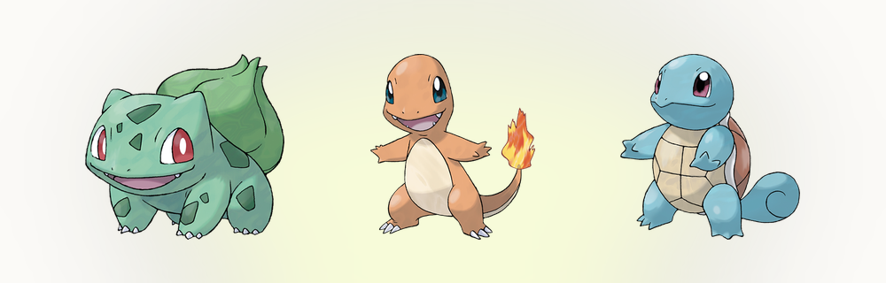

ヌズロックチャレンジとは、本編のポケモンをパーマデス縛りに変えてしまう自主ルールのセットです。ネット上の初心者ガイド、たとえば Game8のチャレンジ解説も同じ内容を扱っています。ROMハックもMODもいりません。すでに持っているゲームをそのまま遊ぶだけなのに、どの遭遇にも重みがあり、どのひんしも取り返しがつかない。
ポケモンは子どもでもクリアできるように作られているので、難易度の天井は低めです。ヌズロックは天井を上げません。賭け金を上げます。名前を付けて10時間育てたポケモンを失うのと、適当なメンバーが倒れるのを見るのとでは、受ける印象がまったく違う。この差がそのまま、このフォーマットの正体です。
ヌズロックチャレンジの由来
始まりは2010年。ニック・フランコというプレイヤーが、ポケモンルビーの縛りプレイを漫画にして投稿したのがきっかけです。当時の記録は Bulbapediaのまとめ に残っています。タイトルは「ポケモン：ハードモード」、投稿先は4chanの /v/ 板でした。捕まえた1匹のコノハナを、『LOST』のジョン・ロックそっくりの不満顔で描いたのが始まりで、読者が2つの名前を合わせて「ヌズロック」と呼ぶようになります。漫画のプレイ自体は全滅で終わりましたが、ルールのほうが生き残りました。数年でフォーマットはあちこちに広がり、掲示板の記録、YouTubeのシリーズ、配信者の耐久企画、やがて専用ツールまで登場します。このサイトの ヌズロック編成 もそのひとつで、そこから中核のルールはほとんど変わっていません。ネットのみんながあることに合意して、そのまま守り続けている、珍しい例です。
ヌズロックの3つの基本ルール
あらゆるバリエーションがありますが、土台は3つです。1つ目。各エリアで最初に出会ったポケモンだけを捕まえられます。3番道路でポッポが出たなら、あなたの3番道路の獲物はポッポです。逃げられた、倒してしまった、逃げ出した、どれでもそのエリアからの収穫はゼロ。2つ目。ポケモンがひんしになったら、それは死です。「あとで復活させればいい」ではなく、死。墓場ボックスに永久に入れるか、逃がすか。この2つだけでゲームは組み替わります。好きな子を選ぶ遊びが、道が配ってくれたものから組み立てる遊びに変わり、ランダムな急所が「ちょっと嫌だな」から「葬式」になります。

3つ目。捕まえたポケモンには全員名前を付けること。最初の1匹を失えば、その意味が分かります。
細かいところは各家庭のルールになりますが、コミュニティのおおよその合意はあります。もらえるポケモン、固定シンボル、そして最初の1匹は、そのエリアの初遭遇に数えない。釣りは水路では別枠の遭遇として扱う。この手の議論は何年も Nuzlocke Forumsで続いてきました。始める前に全部決めてください。走りながら都合のいい答えを選ぶのはやめましょう。
誰もが議論するオプション条項
基本の3つだけで遊ぶ人はほとんどいません。コミュニティは追加ルールのメニューを標準化していて、どれを選ぶかも立ち上げの一部です。
重複回避条項。 最初の遭遇がすでに持っている種族だった場合、飛ばして次に出会ったものを取ってよい、というルール。ほぼ全員が採用しています。これがないと、終盤のポッポだらけの道が不毛地帯になります。
色違い条項。 色違いは初遭遇ルールに関係なく捕まえてよい、というルール。こちらもほぼ全員が採用しています。ルールへの忠誠心だけで色違いの前を通り過ぎる人など、この世にいませんから。(その瞬間がどれくらいレアなのか気になるなら、実際の計算は 色違いの確率をやさしく解説.)
いれかえ固定。 バトルスタイルを「いれかえ」に固定して、相手が次に何を出すかを教えてもらわない。これが大きな難易度の山で、「本気」の周回の標準設定です。
バトル中のどうぐ使用禁止。 キズぐすりも、強化アイテムも、げんきのかけらもなし（そもそも使えません）。ベテランに人気で、初めての周回には容赦がありません。
レベル上限。 ポケモンは次のジムリーダーのエースのレベルを超えてはいけない。最初の1匹をひたすらレベル上げして押し切る、あの定番戦法が封じられます。
初めてなら、基本の3つに重複回避と色違い条項まで。1周終えたら、いれかえ固定とレベル上限を足してください。
最初のヌズロックを生き延びるコツ
ヌズロックの死の多くは、準備不足から来ます。ジムの前に必ずレベル上げを。普通のプレイでは任意ですが、ここでは保険です。道で10分多く使うほうが、葬式より安く済みます。そしてボスに会う前に調べること。Serebiiの 攻略データ を見れば、リーダーのエース、そのレベル、範囲技まで分かります。周回が死ぬのは、公平な勝負より不意打ちのほうがずっと多い。第2世代の初周回が何で終わったかを聞けば、アカネのミルタンクの名前が何より多く出てきます（ r/nuzlocke subreddit には、そういう話が山ほど転がっています）。測定された統計ではなくコミュニティの伝説ですが、20年以上のスレッドがその説を支えています。
地味なポケモンを過大評価すること。主役に見えるのは最初の1匹ですが、周回を生かすのは地味な連中です。技マシンの範囲が広いノーマルタイプ、硬い壁役、安定した変化技を持つ何か。 PokemonDB なら、道ごとにすぐ下調べできます。ファイアレッドのラッタが典型で、誰の推しでもないのに、ひっさつまえば、マチス戦用のあなをほる、それに範囲を補う技マシンを1つ足せば、ゲームの半分に答えられます。勝てるパーティの多くは、道で拾った普通のポケモン5匹と、主役を分け合うことを覚えた最初の1匹でできています。
身代わりの交代を覚えること。受けきれない技が来るとき、捨てるつもりのポケモンを出して一撃を引き受けるのが、唯一の手であることがよくあります。「捨て駒」はベテランのパーティでも実際の役割で、詳しくは Smogon communityで長々と議論されています。計画的に落とす1匹は、偶然の1匹よりずっとましです。そして誰かが本当に倒れたら、そのまま続けてください。周回が終わるのは、お気に入りを失ったときではなく、全滅したときです。最高のヌズロックの話のいくつかは、1匹の死から始まっています。その死が、変なボックス産のポケモンをパーティに呼び込み、そいつが残りを背負う。そういう話です。
ついでに、全滅が何を意味するのかを先に自分と決めておいてください。多くの人はパーティ全滅でその周回は終わり、と割り切ります。新しいセーブ、新しい挑戦。ボックスから「2回目のチャンス」として組み直すのを許す人もいます。どちらもアリですが、最初の全滅は初挑戦の人が静かにやめる瞬間で、ルールを先に書き留めておけば、その判断は自動的に決まります。
ランダムなチームで周回を始める
40時間かける前に、このフォーマットの核心だけ味わいたいなら、ヌズロックチームビルダーが全国図鑑からランダムに6匹を配ります。チームを固定し、引き直しを自分に禁じれば、本番の周回が求めるもの、つまり欲しかったものではなく与えられたものから組むことを、そのまま練習できます。カートリッジのセーブを始める前に、 Pokemon Showdown で挑戦の戦いを丸ごと試すこともできます。本番なら、作品選びが大事です。 Pokemon.com が公式ライブラリを参照用にまとめています。初挑戦の定番はファイアレッドとハートゴールド。地方の顔ぶれが小さく、ボスの戦いがよくまとめられていて、嫌な不意打ちが少ない。ソード・シールドは初挑戦では避けたほうがいいでしょう。強制の「がくしゅうそうち」が、この縛りが作るはずの難易度カーブをなで消してしまいます。あとは全部に名前を付けて、愛着を持ちすぎないこと。